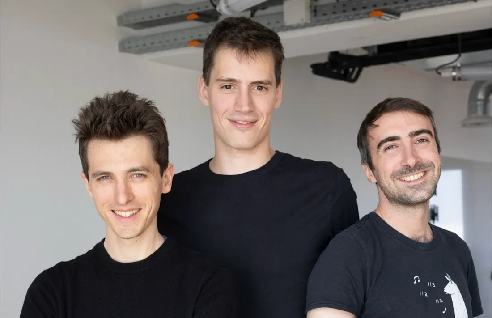

Mistral AI: Pioneering the AI Landscape in Europe
Mistral AI is a European startup that is rapidly gaining attention in the field of large language models (LLMs). Founded in 2023 in Paris, the company has quickly established itself as one of the most important challengers to American giants like OpenAI, Anthropic, and Google DeepMind. What makes Mistral unique is its commitment to open-source, efficiency, and European digital sovereignty. At a time when most powerful AI models are closed, expensive, and controlled by a handful of US tech companies, Mistral offers an alternative vision: powerful, transparent, and community-driven. In this article, we will dive into the origins of Mistral, explore its models such as Mistral 7B and Mixtral 8x7B, explain its architecture, present its advantages and limitations, and discuss why it represents a turning point for European AI.
- Origins and Mission of Mistral AI -
Mistral AI was founded by three French researchers and engineers: Arthur Mensch (former Google DeepMind researcher), Guillaume Lample (ex-Meta AI scientist, specialist in transformers and language models), and Timothée Lacroix (also ex-Meta). Their vision is clear: build the best open-source LLMs in the world, and allow companies, governments, and developers to integrate advanced AI without depending on closed systems controlled by non-European actors. In just a few months, Mistral raised more than 105 million euros, a record for a European AI startup at seed stage. This funding reflects the confidence of investors in the capacity of Europe to catch up in the race of generative AI.
The choice of the name Mistral is symbolic: it refers to a powerful wind from the south of France, illustrating speed, strength, and independence.
- Mistral’s Core Models -
Since its creation, Mistral AI has already released several remarkable models:
+ Mistral 7B
The Mistral 7B model is a 7 billion parameter dense transformer. Despite its relatively small size compared to giants like GPT-4, it has been optimized to be extremely efficient and competitive on many benchmarks. It is designed to be lightweight enough to run on fewer GPUs, making it attractive for research labs, startups, and enterprises without massive infrastructure.
+ Mixtral 8x7B
Released later, Mixtral 8x7B is a Mixture of Experts (MoE) model. It is composed of 8 sub-models ("experts"), each with 7 billion parameters. However, only 2 experts are active per request, which significantly reduces the computational cost. This design allows Mixtral to reach performance comparable to much larger models (30–40B parameters), while consuming far less energy and hardware.

+ Future Models
The roadmap of Mistral includes the release of larger models (13B, 30B, and beyond) as well as multimodal models capable of processing not only text but also images and audio.
- Architecture of Mistral Models -
Like most modern LLMs, Mistral is based on the transformer architecture, introduced in 2017 by Google researchers in the paper "Attention Is All You Need". The transformer uses a mechanism called self-attention to process long sequences of text efficiently, capturing both local and global dependencies between words. The originality of Mistral lies in:
- Optimized attention mechanisms for speed and memory efficiency.
- Use of sliding window attention to handle long contexts (more than 8k tokens).
- Application of sparse activation in Mixtral, where only a subset of experts are activated per prompt.
Here’s a simplified code example of loading Mistral 7B from Hugging Face:
from transformers import AutoModelForCausalLM, AutoTokenizer model_name = "mistralai/Mistral-7B-v0.1" tokenizer = AutoTokenizer.from_pretrained(model_name) model = AutoModelForCausalLM.from_pretrained(model_name) prompt = "Explain why open-source AI matters for Europe." inputs = tokenizer(prompt, return_tensors="pt") outputs = model.generate(**inputs, max_length=200) print(tokenizer.decode(outputs[0]))
This simple example shows how accessible Mistral models are to the community, reinforcing their open-source DNA.
- Applications of Mistral Models -
The potential applications of Mistral models are numerous:
+ Chatbots and Virtual Assistants
Like other LLMs, Mistral can be integrated into customer service chatbots, personal assistants, or enterprise Q&A systems.
+ Data Analysis and Search
Thanks to their contextual understanding, these models can help analyze large corpora of documents, summarize reports, or improve enterprise search engines.
+ Education and Research
Universities and labs can fine-tune Mistral on specific datasets, creating domain-specific assistants for medicine, law, or engineering.
+ European Digital Sovereignty
Perhaps the most strategic application: Mistral strengthens European independence in AI, ensuring sensitive data can be processed locally without relying exclusively on US platforms.
- Advantages of Mistral -
- Open-source: all models are publicly available on Hugging Face.
- Efficiency: small but powerful, optimized to run on fewer GPUs.
- Transparency: unlike closed models, Mistral encourages auditability and reproducibility.
- Cost-effective: enterprises can deploy them locally, reducing API costs.
- Sovereignty: Europe gains independence in the AI arms race.
- Limitations of Mistral -
Despite its strengths, Mistral faces challenges:
- Still smaller than giants like GPT-4 or Claude 3 in terms of training scale.
- Limited multimodality: text-only for now, while competitors move into image, audio, and video.
- Funding gap: US startups raise billions, while Mistral has hundreds of millions.
- Ecosystem maturity: fewer fine-tuned variants and plugins compared to OpenAI’s ecosystem.
- The European AI Ecosystem -
Mistral is not alone. Europe also has initiatives like:
- Aleph Alpha (Germany) → building sovereign European AI platforms.
- Hugging Face France → open-source backbone of NLP.
- Bloom → an open multilingual LLM trained by 1000+ researchers worldwide.
Together, these initiatives prove that Europe is determined to be a serious player in generative AI.
- Ethics and Responsible AI -
Mistral emphasizes responsible AI:
- Bias reduction: models are audited for fairness.
- Open evaluation: researchers can test models freely.
- European regulations: aligned with the upcoming EU AI Act.
- Future Prospects of Mistral -
In the coming years, Mistral aims to:
- Release larger LLMs rivaling GPT-4.
- Expand into multimodal AI (text + vision + speech).
- Strengthen partnerships with European governments and enterprises.
- Position itself as the default open-source alternative to US AI platforms.
- Conclusion -
Mistral AI is not just another startup. It represents a new vision for open, sovereign, and efficient AI. In less than a year, it has become a reference in the field, proving that Europe can innovate and compete with the biggest players. While challenges remain, especially in funding and scale, the Mistral project embodies a wind of change in the world of artificial intelligence. For developers, companies, and policymakers, it offers a credible alternative — powerful, transparent, and truly global. In the years to come, we will undoubtedly hear more and more about Mistral. Just like the wind it is named after, it may well reshape the AI landscape at high speed.